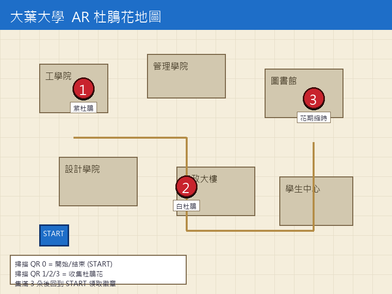

A bloom that lives by conditions
杜鵑花以柔美姿態盛放，卻只在酸性土壤、清涼氣候下方能成形。 將鏡頭對準 QR 標記，杜鵑將綻放於眼前，並開啟生態、影像、生命週期、聲音四個面向。
This experience needs your camera.
沿校園尋找 3 個 QR 標記點，掃描收集杜鵑。集齊後返回 START 領取獎勵。

⚫ 黑色標記 = QR 位置 · Black pins = QR locations
常綠灌木，適生於酸性土壤（pH 4.5–5.5）與排水良好之半遮蔭環境。台灣校園常見種，亦為日本平戶起源之大型雜交種。
株高 1–3 公尺，葉橢圓形革質。花色由純白至深桃紅，五瓣對稱，雄蕊 5–10 枚。
⚠️ 全株含 grayanotoxin 毒素，誤食可致中毒。賞花無虞，請勿採食。
陽明山國家公園杜鵑花盛開縮時影像（4K）。從花苞至盛開的瞬間，記錄春日清晨的綻放過程。
※ 替換 iframe 中的 YouTube ID 即可換成你的影片。
點選各階段以查看詳細說明 · Tap a stage to see details
冬末春初，杜鵑於枝端形成花芽。芽鱗片緊閉，包覆著未來的花朵。低溫累積對花芽分化十分關鍵。
※ 使用瀏覽器 Web Speech API 即時生成。如需自錄音檔，可替換為 <audio src="azalea.mp3">。